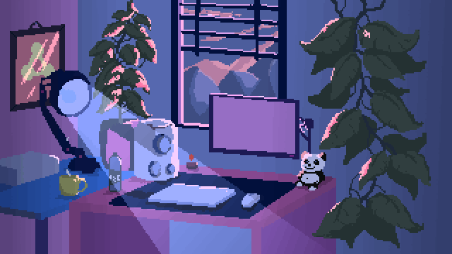
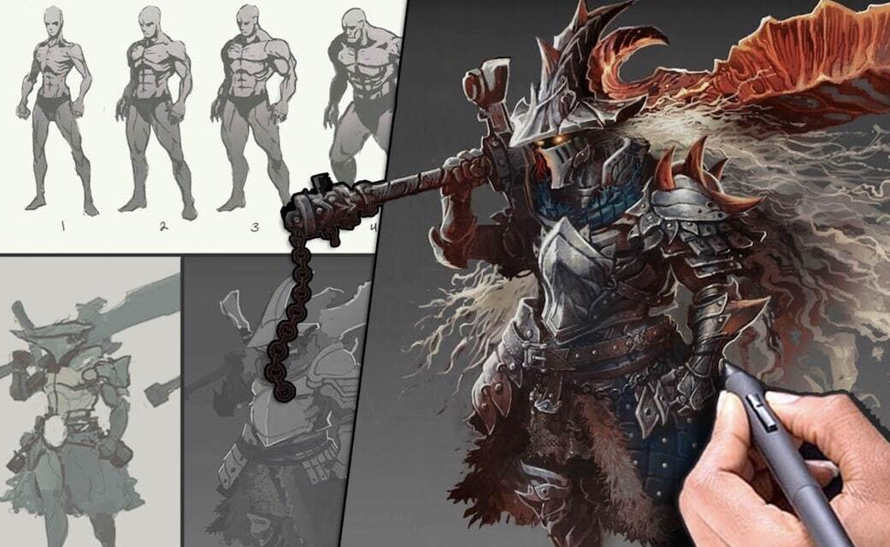

À PROPOS DE MOI
Bonjour à tous et toutes et bienvenue sur mon portfolio.
Je m'appelle Jimryce Jouenne et je suis actuellement étudiant en Licence professionnelle: Métiers du jeu vidéo au sein de l'IUT de Bobigny.
À travers cette formation, j’ai acquis des compétences solides et variées dans les domaines suivants :
Infographie 2D/3D: création et animations de personnages sous format pixel art, Création d'assets 2D/3D, texturing et rigging.
Level Design: Grey boxing, prototypage sur Unreal Engine 5 d'un niveau de jeu type TPS (Third Person Shooter) orientée Level Art.
Programmation: montage vidéo, animation graphique et création d’effets visuels (Premiere Pro, After Effects).
Passionné par l’univers du jeu vidéo, je m’oriente actuellement vers les métiers dit "Artistique" du domaine
tels que Concept Artiste, infographiste 2D/3D, Charadesigner etc. sans avoir encore une idée clair de ce que je voudrait faire plus tard.
À l'heure actuelle, je suis à la recherche d’un stage d'une durée de 3 mois dans l'un des domaines citées ci-dessus afin de validé
ma licence professionnelle et d'obtenir mon diplome.
Merci de votre visite,
N’hésitez pas à parcourir mes projets et à me contacter si mon profil retient votre attention.
Se serait un grand plaisir d’échanger avec vous !
MON PARCOURS
Mon parcours est guidé par une volonté constante d’allier technicité et création numérique. J'ai d'abord forgé mes bases au sein du BUT MMI (Métiers du Multimédia et de l'Internet) à l'IUT de Meaux, en parcours Développement Web et Dispositifs Interactifs.
Ces deux années m'ont permis de maîtriser l'ensemble de la chaîne de production numérique : du design graphique au développement, en passant par le montage vidéo et la gestion de projet en équipe.
C'est durant cette formation que ma pratique s'est affinée vers la 3D et l'interactivité.
J'ai appris à structurer des assets et à comprendre les logiques de programmation, des compétences essentielles pour garantir la viabilité technique d'un objet visuel.
Aujourd'hui, en Licence Professionnelle Métiers du Jeu Vidéo, j'approfondis cette expertise en me concentrant sur le Character Design et le Level Art.
Cette année de spécialisation me permet de confronter mes créations aux exigences réelles du moteur de jeu (Unity) et de stabiliser un workflow de production professionnel, du sculpt à l'intégration.
Curieux et rigoureux, je poursuis mon évolution avec l'objectif de rejoindre une formation de haut niveau (Master) pour perfectionner ma maîtrise de la haute fidélité visuelle et du rendu temps réel.


MON PROJET PROFESSIONNEL
Passionné par l'image numérique, mon regard sur le jeu vidéo a rapidement évolué du divertissement vers la création technique et artistique.
Mon objectif est clair : devenir Character Designer et Infographiste 3D. Ce qui me motive, c'est le défi de la transposition visuelle.
Je cherche à comprendre comment transformer une intention ou un concept 2D en une entité 3D riche et fonctionnelle.
Pour moi, la modélisation n'est pas une simple étape technique, c'est le cœur de l'identité d'un projet.
C’est dans la structure d’un mesh, la finesse d'un sculpt et la réaction des textures à la lumière que se joue la crédibilité d'un univers.
Mon approche combine la rigueur du Game Design (pour la cohérence et l'usage) et la maîtrise des outils de production (Blender, Unity, et prochainement ZBrush et Maya).
Mon ambition est de concevoir des personnages et des assets qui ne sont pas seulement des objets numériques,
mais des éléments porteurs de narration et d'immersion.
Travailler dans la création 3D, c’est pour moi donner vie à l'imaginaire
par l'interaction, en proposant au joueur une expérience visuelle forte
qu'il habite pleinement.